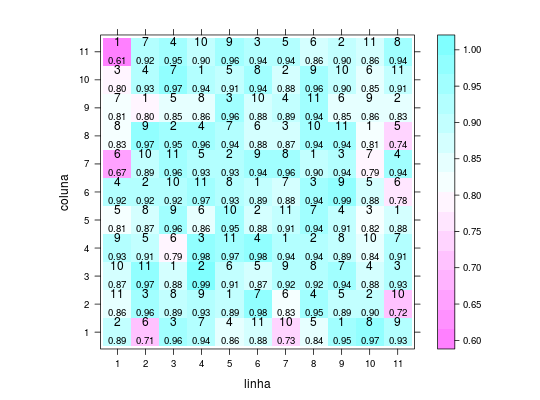
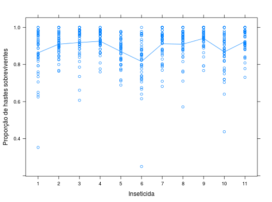

Experimento em delineamento quadrado latino onde foram tomadas quatro amostras em cada uma das parcelas (tipo de inseticida) no que diz respeito ao número total de hastes e número de hastes mortas por cupim (Sinthermes sp.) e lagarta elasmo (Elasmopalpus sp.). Com base nestes números, a proporção de hastes sobreviventes ao ataque de insetos foi calculada.
Um data.frame com 484 observações e 5 variáveis
ZIMMERMANN (2004), Tabela 5.1, pág. 101.
library(lattice) data(ZimmermannTb5.11)#> Warning: data set ‘ZimmermannTb5.11’ not foundstr(ZimmermannTb5.11)#> 'data.frame': 484 obs. of 5 variables: #> $ linha : Factor w/ 11 levels "1","2","3","4",..: 1 2 3 4 5 6 7 8 9 10 ... #> $ coluna : Factor w/ 11 levels "1","2","3","4",..: 1 1 1 1 1 1 1 1 1 1 ... #> $ inset : Factor w/ 11 levels "1","2","3","4",..: 2 6 3 7 4 11 10 5 1 8 ... #> $ amostra: int 1 1 1 1 1 1 1 1 1 1 ... #> $ prop : num 0.9 0.737 0.918 1 0.862 ...aux <- aggregate(prop ~ linha + coluna + inset, data = ZimmermannTb5.11, FUN = mean) str(aux)#> 'data.frame': 121 obs. of 4 variables: #> $ linha : Factor w/ 11 levels "1","2","3","4",..: 9 5 3 7 11 6 8 10 2 4 ... #> $ coluna: Factor w/ 11 levels "1","2","3","4",..: 1 2 3 4 5 6 7 8 9 10 ... #> $ inset : Factor w/ 11 levels "1","2","3","4",..: 1 1 1 1 1 1 1 1 1 1 ... #> $ prop : num 0.954 0.893 0.879 0.939 0.876 ...levelplot(prop ~ linha + coluna, data = aux, aspect = "iso", lbl = as.character(aux$inset), panel = function(x, y, z, lbl, ...) { panel.levelplot(x, y, z, ...) panel.text(x = x, y = y, labels = lbl, pos = 3) panel.text(x = x, y = y, labels = sprintf("%0.2f", z), pos = 1, cex = 0.8) })xyplot(prop ~ inset, data = ZimmermannTb5.11, type = c("p", "a"), xlab = "Inseticida", ylab = "Proporção de hastes sobreviventes")